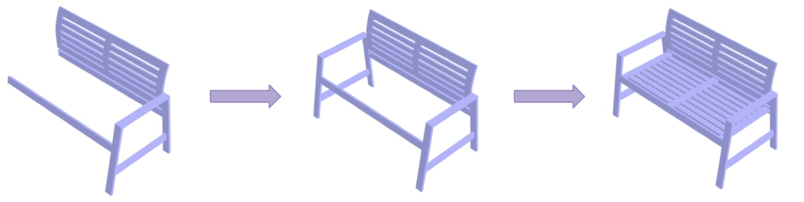
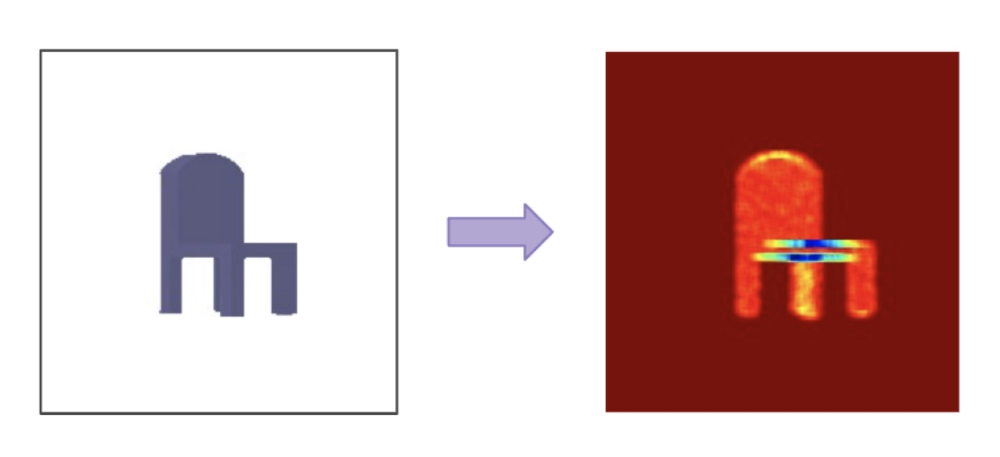
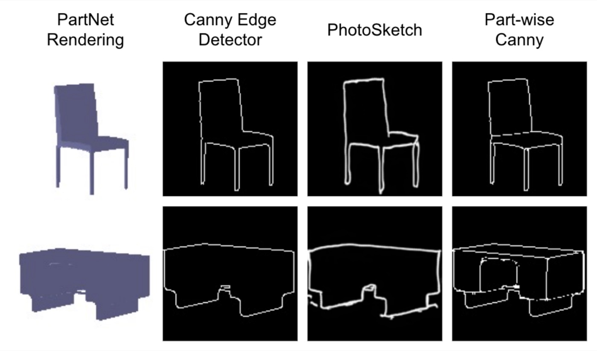
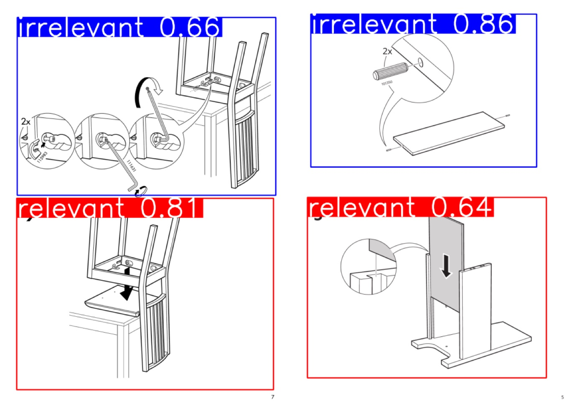
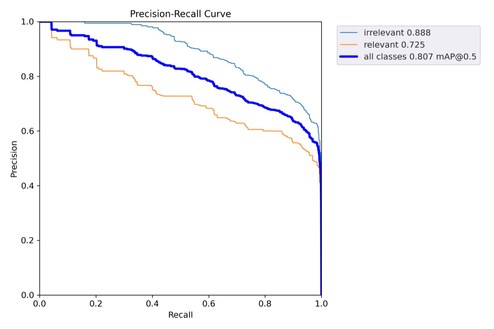
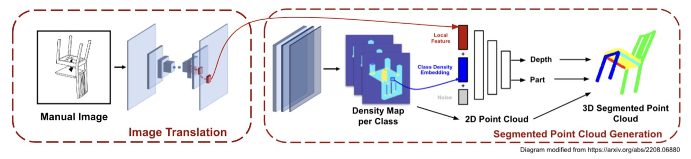
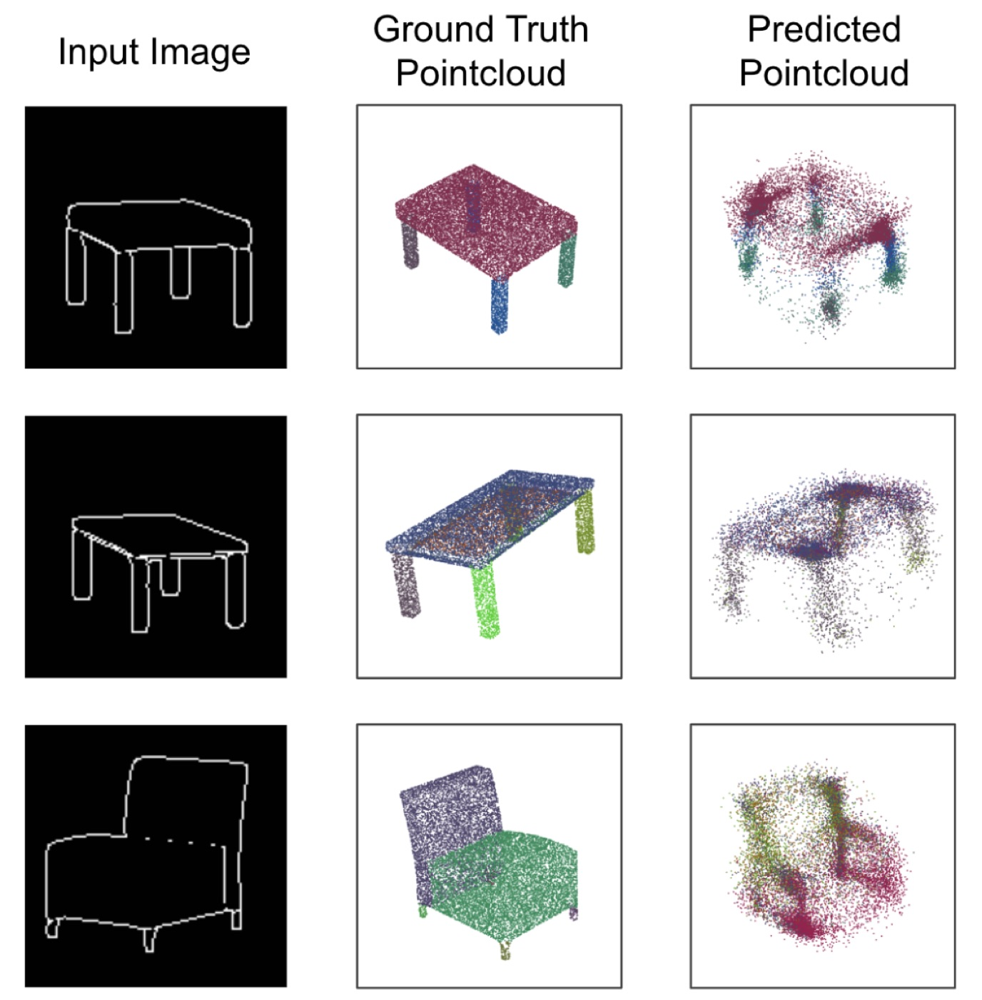
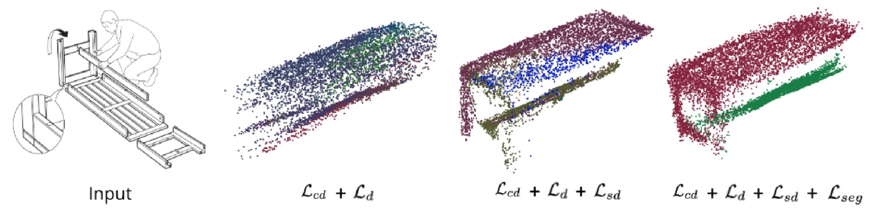

IKEA-GAFR
Geometry-Aware Furniture Reconstruction: a pipeline that identifies key steps in an IKEA assembly manual and reconstructs a part-segmented 3D point cloud of the furniture at each step, from the manual's line drawing alone.
Motivation
IKEA furniture usually comes as primitive parts + a visual manual that shows, step by step, how the parst fit together. The drawings are often unclear and can provide confusing or ambiguous 3D information about what the furniture should look like at a given step.
IKEA-GAFR takes a manual as input and outputs a 3D reconstruction for each assembly step, acting as a "coach" (or gaffer) for the build. More broadly, the project tackles single-view reconstruction from sketches. Turning visual manuals into machine-readable 3D is also a step toward automated assembly in robotics and AR/VR.
Data
We used the IKEA-Manual dataset (Wang et al.), which provides 102 IKEA objects with CAD models of each part, per-step camera and part poses, per-step segmentation masks, key-step page numbers and assembly trees. We prepared it in four steps.
- Per-step models. We combined the part primitives to get a 3D model of the furniture at each step. (Figure 1)
- Key-step labels. We labeled bounding boxes and relevant/irrelevant classes on manual pages with the VIA annotation tool.
- Part-wise density maps. For each model, we sampled a point cloud per part (with point counts proportional to part area) and projected the points into the image with the given camera. Counting how many points land on each pixel gives a density map. Because we know which part each point came from, we also get a separate density map for each part. (Figure 2)
- Sketch-style pretraining data. IKEA-Manual is small, so we pretrained on PartNet renderings converted to line drawings. Canny edges and Photo-Sketching both captured outer contours but missed edges between parts, so we ran edge detection on each part separately and merged the results, using depth (from the PyTorch3D renderer) to decide which edges are visible. (Figure 3)



Key-Step Recognition
The first stage of our pipeline splits a manual PDF into page images and runs an object detector on each page to find the key steps. Following IKEA-Manual, a key step is one that shows new information about how parts are oriented relative to each other. Steps about screws or hand interactions are marked irrelevant. We used a YOLOv5 detector with one head for relevance and one for bounding boxes. We chose a single-shot detector to keep latency low, so the full pipeline can run in real time.
Results
We trained the detector from scratch on 953 manually labeled manual pages covering 6 furniture categories and 19 models. 341 of the pages contain key steps, with 1-3 key steps per page.
| Class | mAP@0.5 | mAP@0.5:0.95 |
|---|---|---|
| All | 0.807 | 0.669 |
| Relevant (key step) | 0.725 | 0.605 |
| Irrelevant | 0.888 | — |
Because the detector was trained from scratch on a very small dataset, these numbers should be read as a proof of concept.


3D Reconstruction
Part-Segmented Point Clouds
Once key-steps have been identified, the next step is to turn those key steps into a sequence of 3D parts. Our model builds on SketchSampler, which reconstructs from sketches by first predicting a density map: the probability that a 3D point projects to each pixel. A line drawing has far fewer depth cues than a photo, and we think this is why the sketch-to-3D baselines we tested did not generalize to unseen manuals. The general intuition is that it is easier to move from 2D to 2.5D (density map) to 3D (point cloud) than directly moving from 2D to 3D, so forcing the model to first predict density maps allows it to learn underlying 3D structure that makes the reconstruction task more tractable.
Compared to SketchSampler, we also predict part-wise density maps in addition to the whole-object density map. We believe this addition allows the model to reason not only about the overall furniture geometry but individual part geometry as well, allowing for segmentation on top of the reconstruction that SketchSampler does. Our overall pipeline is described below:
- An encoder-decoder turns the input sketch into a feature map.
- A second network predicts the object density map and the per-part density maps.
- 2D points are sampled from the object density map and encoded into class embeddings using the per-part maps.
- For each sampled point, its local image feature, class embedding and a noise vector go into a network that predicts the point's depth and part label. The noise vector helps disambiguate different 3D points that project to the same pixel.

Losses
We train with four losses. is the ground-truth point cloud, is the predicted point cloud, and is the value of a density map at pixel ().
1. Chamfer distance () measures how well the predicted point cloud matches the ground truth:
The first term moves every ground-truth point toward its nearest predicted point , so no part of the object is missed; the second moves every predicted point toward its nearest ground-truth point, so no stray points are added.
2. Density loss () is an absolute (L1) error on the whole-object density map:
where and are the ground-truth and predicted share of the object's 3D points that project to pixel ().
3. Part-density loss () is a per-pixel cross-entropy on the part-wise density maps:
where is the density map of part alone (the share of part 's points that project to pixel ()) and is the number of parts. We believe this supervises segmentation indirectly, and also gives the reconstruction more structure.
4. Segmentation loss (), the location-aware loss from 3D-PSRNet, supervises the part labels of the final point cloud directly:
where is the part label of ground-truth point , the predicted part probabilities of predicted point , the nearest point in the other cloud, and CE the softmax cross-entropy. Each point is compared with its nearest neighbour in both directions, so labels are checked without needing a one-to-one match between the two clouds.
Total loss. The four losses are combined as a weighted sum:
with the loss weights tuned on PartNet and IKEA-Manual.
Results
Even after fewer than 5 epochs of training on PartNet, the model captures the overall shape and is learning a plausible part segmentation. Colors only distinguish parts and have no semantic meaning.

Loss Ablation
To check the approach on real manual drawings, we trained only on IKEA-Manual and added the losses above one at a time. Chamfer distance and density MAE alone seem to provide a rough shape. Adding the part-density loss gives more structure and a softer push toward sensible parts. Adding the segmentation loss cleans up the segmentation further. These results likely come from a slightly overfit model; the goal was a proof of concept.

Training Setup
| Key-step detector | Point cloud model | |
|---|---|---|
| Input size | 640 × 640 | 128 × 128 |
| Batch size | 16 | 32 |
| Optimizer | Adam, cosine LR from 1e-3 | Adam (β = 0.9, 0.999), LR 1e-3 |
| Epochs | 30 | < 5 |
Limitations and Next Steps
- The point cloud model was pretrained on PartNet for fewer than 5 epochs. We expect much better shapes and part labels with longer training.
- PartNet pretraining used complete objects. Partially assembled objects would better match what manuals show.
- Each step is predicted independently. Using the previous step's prediction to initialize the next one would let the model use the whole manual.
References
- Ruocheng Wang et al. "IKEA-Manual: Seeing Shape Assembly Step by Step." 2023.
- Chenjian Gao et al. "SketchSampler: Sketch-based 3D Reconstruction via View-dependent Depth Sampling." 2022.
- Priyanka Mandikal, Navaneet K L, and R. Venkatesh Babu. "3D-PSRNet: Part Segmented 3D Point Cloud Reconstruction from a Single Image." 2018.
- Kaichun Mo et al. "PartNet: A Large-scale Benchmark for Fine-grained and Hierarchical Part-level 3D Object Understanding." 2018.
- Glenn Jocher et al. "ultralytics/yolov5: v7.0." 2022.
- Mengtian Li et al. "Photo-Sketching: Inferring Contour Drawings from Images." 2019.
- Abhishek Dutta and Andrew Zisserman. "The VIA Annotation Software for Images, Audio and Video." ACM MM 2019.
- Nikhila Ravi et al. "Accelerating 3D Deep Learning with PyTorch3D." 2020.